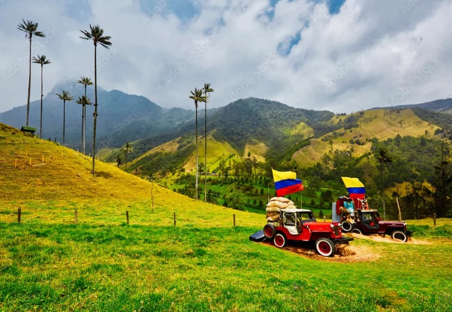
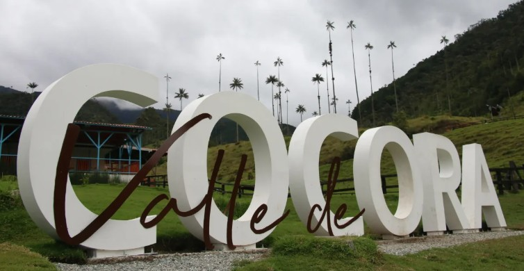
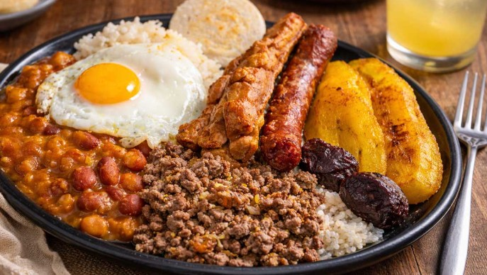
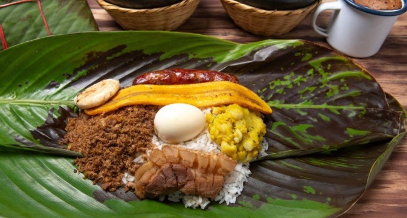
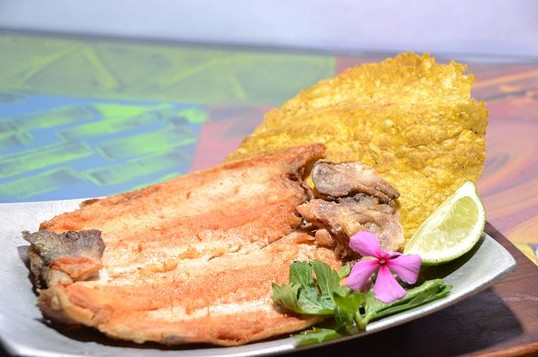

Armenia hace parte del Eje Cafetero colombiano, una de las regiones más representativas del país por su producción de café y sus hermosos paisajes culturales.

Es conocida como la “Ciudad Milagro” debido a su rápida reconstrucción después del terremoto de 1999, demostrando la fortaleza y resiliencia de su gente.
La ciudad está rodeada de paisajes naturales increíbles, como montañas, fincas cafeteras y valles que ofrecen tranquilidad y contacto directo con la naturaleza.
Conoce más sobre Armenia Ver gastronomíaAdemás, Armenia tiene un clima templado muy agradable, ideal para disfrutar de actividades al aire libre y recorrer sus alrededores sin temperaturas extremas.
| Lugar | Ubicación | Características |
|---|---|---|
| Parque del Café | Montenegro, cerca de Armenia | Parque temático sobre el café con atracciones y cultura cafetera. |
| Valle del Cocora | Cerca de Salento | Paisajes naturales con palmas de cera gigantes. |
| Parque Sucre | Centro de Armenia | Lugar tradicional rodeado de arquitectura y vida local. |
El Valle del Cocora es uno de los paisajes naturales más impresionantes de Colombia, ubicado cerca de Armenia. Es famoso por sus altas palmas de cera, el árbol nacional, que crean un entorno único y majestuoso. Este destino es ideal para los amantes de la naturaleza, ya que ofrece caminatas ecológicas, aire puro y vistas espectaculares, convirtiéndose en una experiencia inolvidable en el corazón del Eje Cafetero.

Armenia es reconocida por su gastronomía típica del Eje Cafetero, llena de tradición y sabor casero. Entre sus platos más representativos se encuentran la bandeja paisa, el fiambre, la trucha y la arepa de maíz.

Bandeja paisa

Fiambre

Trucha
Arepas de maíz